Hablemos de Hardware
Publicado el 31 de agosto de 2024
En un sistema informático, definimos el hardware como los componentes físicos(tangibles) que conforman dicho sistema.
Como ejemplos de hardware en un computador tenemos el mouse, el teclado, la pantalla, las bocinas, el micrófono y el disco duro.
Uno de los hardware más importantes en la computación, debido a su utilidad y a la necesidad de almacenar información, es el disco duro. Este componente es el encargado de almacenar la información que necesitamos conservar, como archivos de texto, música, fotos, programas, etc.
Para entender un poco su evolución, es necesario remontarnos a 1956, año en el que surge el primer disco duro, el cual pesaba 1 tonelada y tenía una capacidad de tan sólo 5MB. Para lograr alcanzar una capacidad de almacenamiento superior a 1GB se necesitaron 24 años de constantes cambios y avances; en el año 1980 IBM introdujo un nuevo modelo de disco duro que consiguió brindar esa capacidad de almacenamiento.
Respondiendo a la creciente y constante necesidad de almacenar grandes cantidades de información, actualmente podemos contar con discos duros de hasta 20TB y con un costo mucho menor al que tenían los primeros discos duros. Además se puede evidenciar que estos avances tecnológicos toman cada vez menos tiempo, por lo que no sería extraño que en pocos años, o incluso en cuestión de meses, podamos ver duplicada la capacidad de almacenamiento que se tiene actualmente.
En conclusión, a medida que la tecnología evoluciona se deben adaptar los componentes necesarios, tanto hardware como software, para lograr explotar al máximo los beneficios que nos brindan estos avances.
Cómo utilizar Git
Publicado el 21 de septiembre de 2024
Creación de un repositorio local
Un repositorio de Git es un almacenamiento virtual de tu proyecto. Permite guardar versiones del código a las que puedes acceder cuando sea necesario.
Para crear un nuevo repositorio, primero debemos tener instalado Git en nuestro equipo. Se puede descargar fácilmente haciendo clic aquí.
Teniendo Git instalado, creamos una carpeta con el nombre que identifique a nuestro repositorio. Abrimos la carpeta, creamos un archivo con un nombre cualquiera y en la ruta, escribimos "cmd" y pulsamos enter, con lo que se abrirá la ventana del símbolo del sistema:, así:
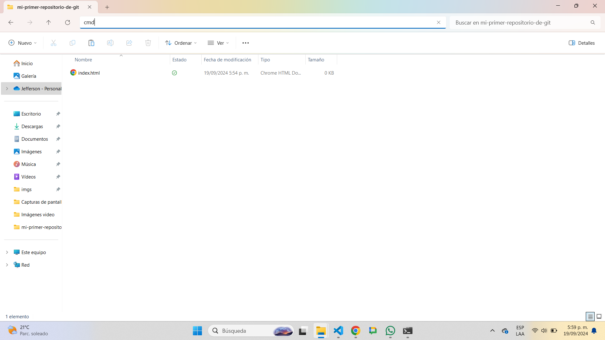 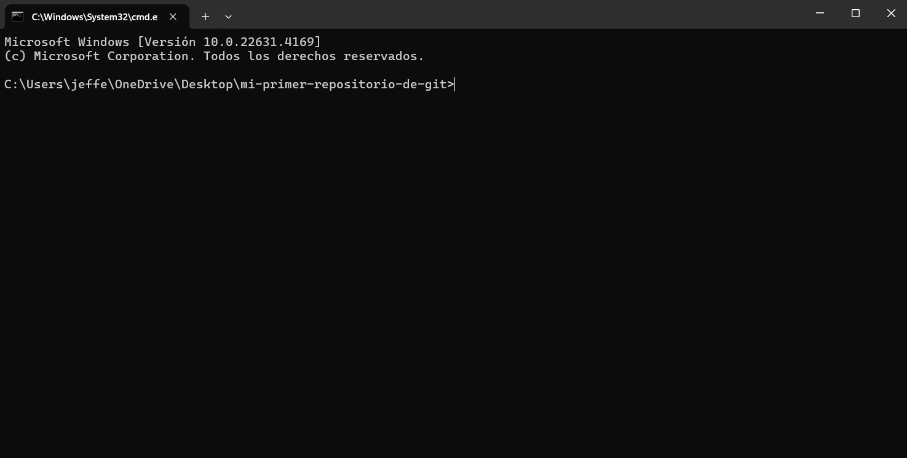
Luego, escribimos el comando "git init" y pulsamos enter. El comando git init crea un nuevo repositorio de Git. Puede utilizarse para convertir un proyecto existente y sin versión en un repositorio de Git, o para inicializar un nuevo repositorio vacío.
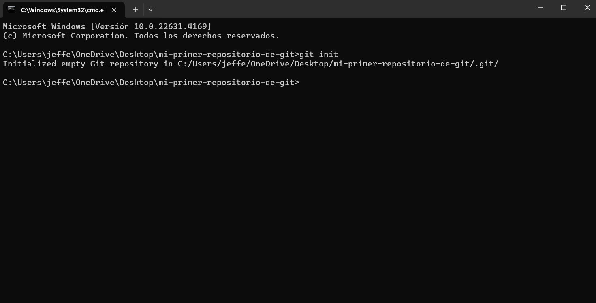
Cuando trabajamos en equipo utilizando Git, es importante tener nuestro trabajo "aparte" o "aislado" de la rama principal, que comunmente es nombrada "master", mientras que realizamos los cambios al código, para así no afectar la rama principal hasta tener nuestro código funcional.
Las ramas en Git se utilizan para desarrollar nuevas características o para la corrección de errores.
Una forma más practica para ejecutar los comandos de Git, es utilizar la función "Open Git Bash Here".
Para esto, vamos a la carpeta que creamos para nuestro proyecto, damos clic derecho y seleccionamos la opción mencionada. Lo que nos abrirá esta terminal:
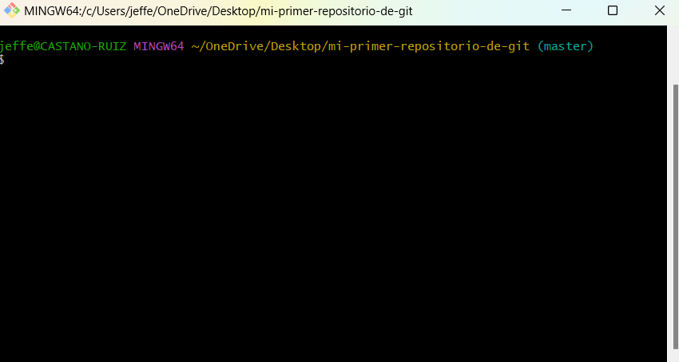
En esta terminal, vamos a crear una nueva rama llamada "modificacion-index", donde trabajaremos en el archivo index.html. Lo haremos ejecutando el comando
"git checkout -b modificacion-index"
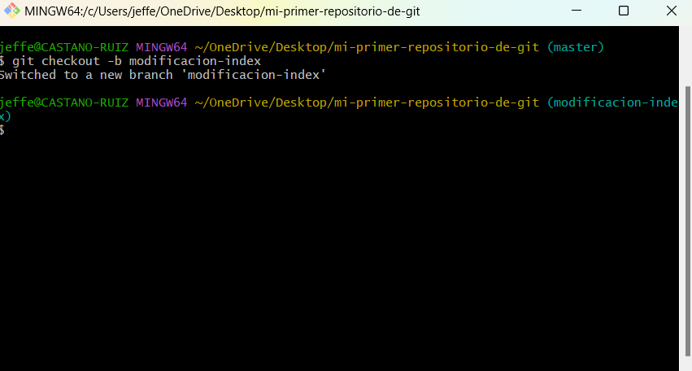
Luego de realizar los cambios que necesitemos, ejecutamos el comando "git status", con el cual veremos los archivos que tienen modificaciones.
En este caso, se modificó el archivo llamado "index.html", para seleccionar este archivo e incluirlo en el próximo commit a realizar, ejecutamos el comando "git add index.html".
En el caso de que tengamos varios archivos con modificaciones y necesitemos agregarlos todos de una sola vez, podemos ejecutar el comando "git add ."
Posteriormente, para confirmar los cambios, ejecutamos el siguiente comando: git commit -m "Aquí escribimos un mensaje que describa los cambios realizados".
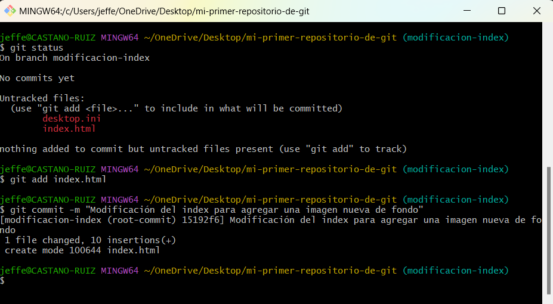
Para que nuestra rama principal "master" tenga los cambios que realizamos en esta rama, ejecutamos el comando "git checkout master" para pasarnos a la rama master.
Luego, ejecutamos el comando "git merge modificacion-index" para que los cambios almacenados en esa rama se fusionen con "master".
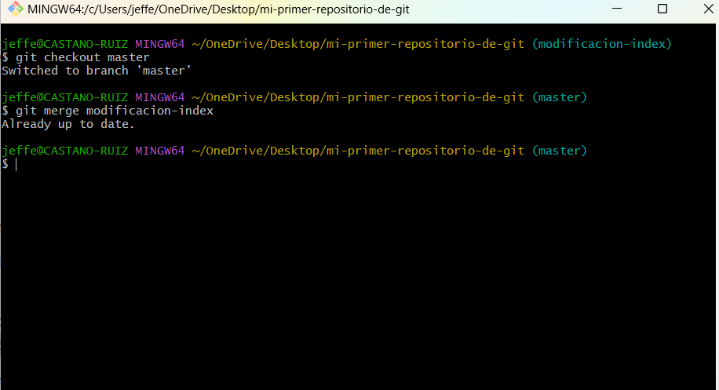
Para conectar nuestro repositorio local con uno remoto de Github, ingresamos a Github y en la esquina superior izquiera pulsamos "New".
Elegimos el nombre para el repositorio y damos clic en "Create repository".
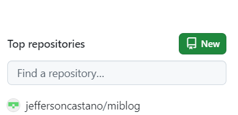 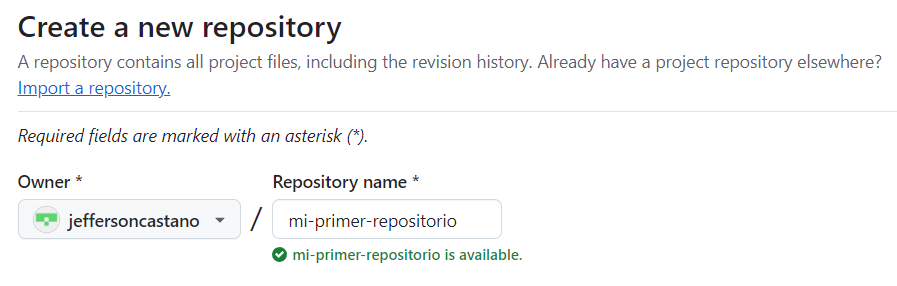 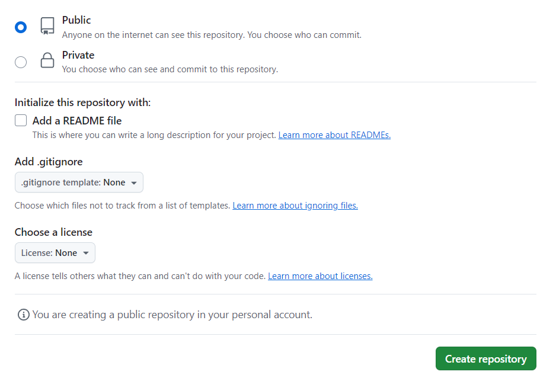
Luego de esto, en la consola de Git, ejecutamos el comando "git remote add origin 'URL' " reeemplazando 'URL' por la que corresponde a nuestro repositorio (esta URL la obtenemos al crear el repositorio).
Este comando se utiliza para conectar nuestro repositorio local al repositorio remoto en Github.
Por último, para subir los cambios del repositorio local al remoto, debemos ejecutar el comando "git push -u origin master", teniendo en cuenta que "master"
debe ser reemplazado por el nombre de tu rama principal, en caso de que tenga otro nombre.
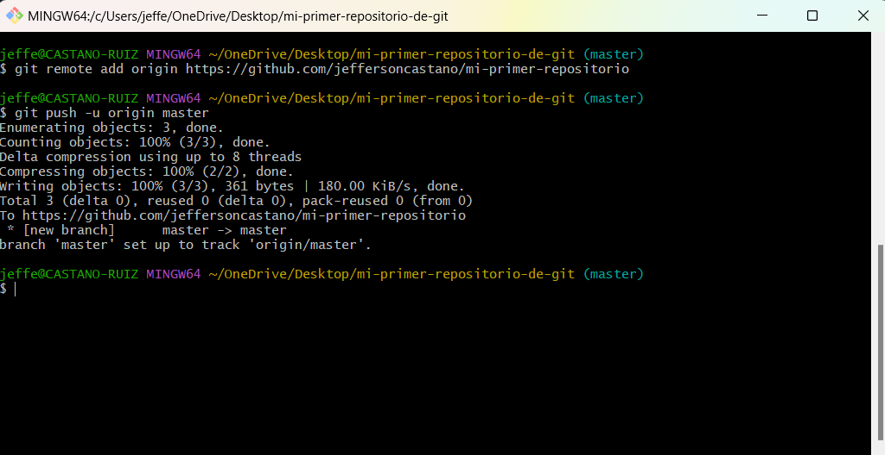
Si ingresamos al repositorio, podemos verificar que efectivamente el archivo o archivos que teníamos locales, están almacenados ahora en nuestro repositorio de GitHub
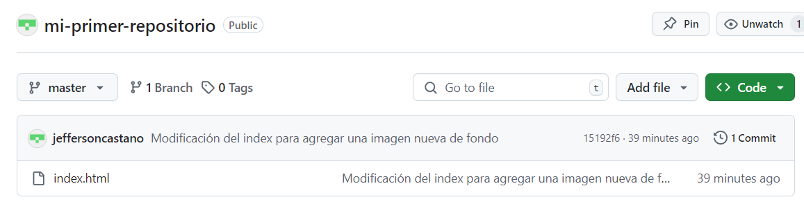